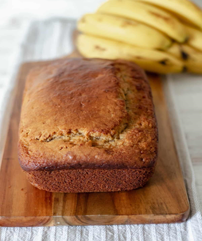

Pan de Bannana
Por Katherine Herrera
Ingredientes:
2 Tazas de Harina (todo uso)
1 huevo
1 barra de Mantequilla
Polvo de hornear
Canela
Vainilla
2 bananas suaves
1 taza de azúcar
Instrucciones:
1. En una olla grande, calienta las 5 latas de leche ideal y las 4 latas de leche condesada a fuego medio hasta que estén tibias. Revuelve ocasionalmente para evitar que se peguen al fondo.
2. Agrega las 6 yemas de huevo previamente revueltas a la mezcla de leche. Continúa revolviendo constantemente para que las yemas se integren de manera uniforme y la mezcla se vuelva cremosa.
3. Incorpora 1 cucharada de vainilla a la mezcla en la estufa, asegurándote de que se distribuya completamente para resalten los sabores.
4. Con precaución, toma una medida de la mezcla caliente en una taza resistente al calor y agrégala lentamente a las yemas de huevo revueltas, mezclando constantemente para evitar que las yemas se cuajen.
5. Una vez que la mezcla de yemas y leche esté bien combinada, viértela de manera gradual y constante de vuelta en la olla grande, removiendo continuamente mientras lo haces.
6. Agrega otra cucharada de vainilla a la mezcla y continúa revolviendo a fuego medio hasta que la mezcla alcance el punto de ebullición. La combinación de sabores y aromas comenzará a llenar la cocina.
7. Retira la olla del fuego y permite que la mezcla repose durante unos minutos. Luego, incorpora gradualmente la taza y media de ron, removiendo suavemente para garantizar una distribución uniforme.
8. Para acentuar los sabores, espolvorea nuez moscada al gusto sobre la superficie de la mezcla y revuelve delicadamente.
9. Sirve el Ron Ponche "Tía Mati" en copas individuales sobre tres cubitos de hielo en cada una, para resaltar las notas de sabor y crear una experiencia refrescante.
10. Disfruta de este exquisito ponche en compañía de tus seres queridos, celebrando la tradición y el amor que se transmiten de generación en generación.
¡Salud y buen provecho! El Ron Ponche "Tía Mati" es mucho más que una bebida; es un extracto de una tradicion familiar en cada sorbo, una conexión con nuestras raíces y una expresión de cariño a través de su sabor inigualable.